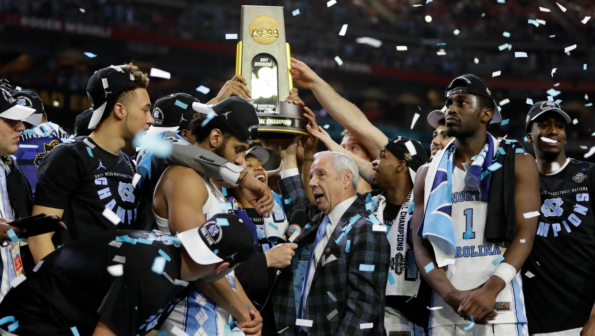

About Me
I'm a recent graduate from UNC Chapel Hill, where I earned a B.S. in Economics and Statistics. My journey into analytics is fueled by a passion for data-driven decision-making. Skilled in Excel, R, Python, SQL, and Tableau, I'm eager to dive into the world of analytics.
Excited to continue my academic journey, I've been accepted into Georgia Tech's Master of Science in Analytics program, where I plan to balance part-time studies online with working full-time in the Charlotte area. This portfolio is a glimpse into my enthusiasm for data projects and my commitment to growth in this dynamic field.

This research project utilizes various machine learning techniques, including logistic regression, LDA, QDA, classification trees, random forest, boosting, SVM, and KNN, to model individual employment status. The objective is to identify significant predictors that can benefit job seekers, inform organizational recruitment strategies, and guide policy initiatives aimed at addressing unemployment and promoting social equality.
Using historical NBA data and engineered variables, this project aimed to develop predictive models for the spread, total points, and offensive rebound total in all NBA games played between April 4 and April 9, 2023. The goal was to provide insights into game dynamics, potentially benefiting the sports betting market by aiding bettors in making informed decisions.
A graphical dashboard was crafted in Tableau to present descriptive statistics of Seattle Airbnb listings, based on a dataset from 2016. The visuals explore property size, listing type, location, and seasonal pricing. These insights are valuable for property managers and renters alike, shedding light on popular property types in Seattle and providing a comprehensive overview of the market.

This project aims to establish the most influential elements for winning basketball games in Men's D1 NCAA Basketball. By creating a predictive model for win percentage, the objective is to understand which factors contribute most significantly to a team's success. The project's motivation lies in offering valuable insights to basketball teams, aiding them in making informed decisions regarding training, game tactics, player recruitment, and other strategic aspects.

In this Tableau dashboard, I compare Xbox and PlayStation video game sales. I identify top-selling games, analyze global sales by genre, and depict region-specific trends for each console. These insights can be used by gaming companies to refine their marketing strategies, inform investment decisions, and tailor their game offerings to different markets.

As part of a Data Analytics and Visualization job simulation on Forage, a platform providing virtual work experience, I assumed the role of an analyst at Accenture. Tasked with aiding Social Buzz, a fictitious social media company, I analyzed content categories to identify the top 5 most popular, offering insights into managing large datasets efficiently.